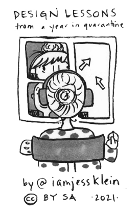
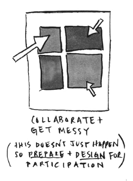

Design Lessons from A Year In Quarantine
I’ve spent a lot of time working remotely in 2020-2021 so I consolidated some of the things I’ve learned. In this zine I’ll explain:
- sharing your design process
- productivity hacks
- async and sync collaboration techniques
- feedback best practices
- the importance of communicating gratitude


The PDF of the zine. This doesn’t require folding.
The PDF of the zine. This doesn’t require folding.
The PDF of the zine. Requires folding. For folding instructions, watch this video.
The PDF of the zine. Requires folding. For folding instructions, watch this video.